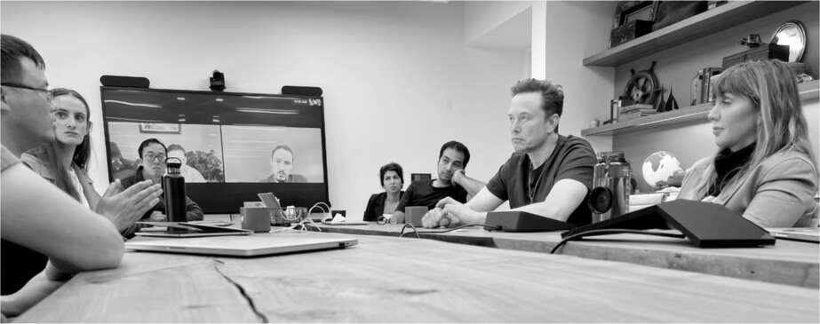
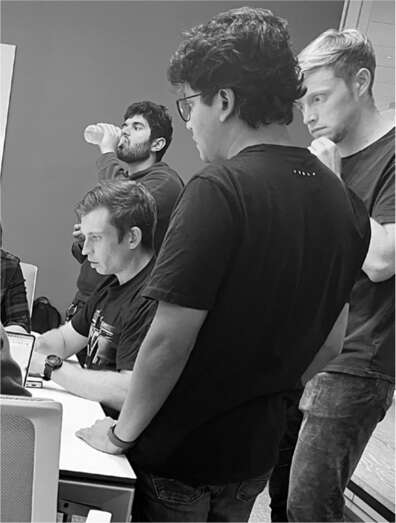

Cực kỳ gay gắt
Yoel Roth và hầu hết đội ngũ kiểm duyệt nội dung đã vượt qua đợt sa thải và sa thải đầu tiên. Với cuộc chiến chống lại những lời lẽ phân biệt chủng tộc và sự phản đối của các nhà quảng cáo, việc không sa thải ngay lập tức đội ngũ này có vẻ là một quyết định thận trọng. "Tôi đã cắt giảm một số rất ít vị trí mà tôi cho là không cần thiết, nhưng không ai gây áp lực buộc tôi phải sa thải mọi người", Roth nói. Hôm đó, ông đã đăng một bài trấn an các nhà quảng cáo rằng "các chức năng kiểm duyệt cốt lõi của công ty vẫn được duy trì."
Ông đã hoàn thiện chính sách mới về việc gọi sai giới tính mà ông đã hứa với Musk. Kế hoạch là đưa ra cảnh báo trên bất kỳ tweet nào vi phạm, giảm khả năng hiển thị của nó và không cho phép nó được đăng lại. Musk đã đồng ý.
Musk sau đó đề xuất thêm một ý tưởng cho việc kiểm duyệt nội dung. Twitter có một tính năng ít được biết đến gọi là "Bird Watch". Nó cho phép người dùng đưa ra các chỉnh sửa hoặc tuyên bố ngữ cảnh trên các tweet mà họ thấy là sai. Musk thích ý tưởng này nhưng ghét cái tên. "Từ giờ trở đi, chúng ta sẽ gọi nó là Ghi chú Cộng đồng", ông nói. Nó hấp dẫn ông như một cách để tránh kiểm duyệt mọi thứ và thay vào đó, như ông nói, "hãy để cộng đồng nhân loại bắt đầu một cuộc trò chuyện và thương lượng xem nó đúng hay sai."
Các nhà quảng cáo đã rút lui trong một tuần, nhưng đến thứ Sáu, ngày 4 tháng 11, làn sóng này diễn ra nhanh hơn. Một phần lý do là do cuộc tẩy chay do các nhà hoạt động trực tuyến dẫn đầu, những người đang kêu gọi các công ty, chẳng hạn như bánh quy Oreo, gỡ bỏ quảng cáo của họ. Musk đe dọa sẽ nhắm vào các nhà quảng cáo chịu thua áp lực. "Một cuộc tấn công cực kỳ gay gắt sẽ chính xác là những gì sẽ xảy ra nếu điều này tiếp diễn", ông đã tweet.
Tối hôm đó, Musk trở nên vô cùng tức giận. Hầu hết mọi người tại Twitter, bao gồm cả Roth, đã thấy ông độc đoán và vô cảm, nhưng họ chưa từng chứng kiến cơn thịnh nộ lạnh lùng của con người đen tối nhất của ông, cũng như chưa học được cách vượt qua cơn bão. Ông gọi cho Roth và yêu cầu ông ngăn người dùng kêu gọi các nhà quảng cáo tẩy chay Twitter. Điều này, tất nhiên, không phù hợp với lời tuyên bố trung thành với quyền tự do ngôn luận của ông, nhưng cơn giận của Musk mang một sự chính trực đạo đức có thể gạt bỏ những mâu thuẫn. "Twitter là một điều tốt", ông nói với Roth. "Sự tồn tại của nó là đúng đắn về mặt đạo đức. Những người này đang làm một điều gì đó vô đạo đức." Những người dùng đang gây áp lực buộc các nhà quảng cáo tẩy chay Twitter đang tham gia vào hành vi tống tiền, ông nói, và nên bị cấm.
Roth kinh hãi. Twitter đâu có quy định nào cấm kêu gọi tẩy chay. Việc này diễn ra nhan nhản. Thực tế, Roth cảm thấy chính những lời kêu gọi như vậy mới khiến Twitter trở nên quan trọng. Hơn nữa, còn có hiệu ứng Barbra Streisand, được đặt theo tên nữ ca sĩ đã kiện một nhiếp ảnh gia vì đăng ảnh nhà bà, khiến bức ảnh được chú ý gấp ngàn lần. Cấm các tweet kêu gọi tẩy chay quảng cáo sẽ chỉ càng khiến mọi người biết đến nó nhiều hơn. "Hình như tối nay là tối tôi phải nghỉ việc rồi", Roth nói với chồng.
Sau vài tin nhắn qua lại, Musk gọi điện cho Roth. "Thật không công bằng", ông nói. "Đây là tống tiền".
"Những tweet này không vi phạm quy định của chúng ta", Roth đáp. "Nếu anh gỡ chúng xuống, mọi chuyện sẽ phản tác dụng". Cuộc trò chuyện kéo dài mười lăm phút và không mấy suôn sẻ. Sau khi Roth trình bày quan điểm, Musk bắt đầu nói nhanh, rõ ràng là không muốn bị phản đối. Ông không hề lớn tiếng, khiến cơn giận của ông càng đáng sợ hơn. Mặt độc đoán của Musk khiến Roth lo lắng.
"Tôi sẽ thay đổi chính sách của Twitter ngay bây giờ", ông tuyên bố. "Tống tiền bị cấm, ngay bây giờ. Cấm nó. Cấm bọn họ."
"Để tôi xem sao", Roth nói. Anh đang cố câu giờ. "Tôi kiểu, mình cần phải cúp máy ngay lập tức", Roth nhớ lại.
Roth gọi cho Robin Wheeler, người đã nghỉ việc với tư cách là trưởng bộ phận bán hàng quảng cáo của Twitter nhưng đã được Musk và Jared Birchall mời quay lại. "Cô biết mấy chuyện này rồi đấy", Roth nói với cô. "Nếu chúng ta cấm một chiến dịch vận động, đó là cách tuyệt vời để khiến nó lan rộng hơn nữa."
Wheeler đồng ý. "Đừng làm gì cả", cô nói với Roth. "Tôi cũng sẽ nhắn tin cho Elon, rồi anh ấy sẽ nghe từ nhiều người."
Điều tiếp theo Roth nghe được từ Musk là một câu hỏi về một chủ đề hoàn toàn khác: Chuyện gì đang xảy ra với cuộc bầu cử ở Brazil? "Anh ấy và tôi đột nhiên trở lại tương tác bình thường, anh ấy hỏi và tôi trả lời", Roth nói. Musk đã thoát khỏi chế độ quỷ dữ. Tâm trí ông đã chuyển sang những việc khác, và ông không bao giờ nhắc lại chuyện tẩy chay quảng cáo hay theo đuổi mệnh lệnh của mình nữa.
Henry Kissinger từng trích dẫn lời một phụ tá nói rằng vụ bê bối Watergate đã xảy ra "vì một tên ngốc nào đó đã vào Phòng Bầu dục và làm theo lời Nixon". Những người xung quanh Musk biết cách vượt qua những giai đoạn quỷ dữ của ông. Roth sau đó đã mô tả cuộc chạm trán này trong một cuộc trò chuyện với Birchall. "Ừ, ừ, ừ", Birchall nói với anh. "Chuyện đó xảy ra với Elon. Anh chỉ cần lờ nó đi và đừng làm theo lời anh ấy. Sau đó, hãy quay lại với anh ấy sau khi anh ấy đã xử lý thông tin."
Dấu tích xanh Twitter Blue
Đăng ký là một phần quan trọng trong kế hoạch của Musk dành cho Twitter. Ông gọi nó là Twitter Blue. Dấu tích xanh đã có sẵn cho những người nổi tiếng và quan chức, những người đã trải qua một quy trình (hoặc dùng quan hệ) để Twitter coi họ đủ nổi bật. Ý tưởng của Musk là tạo ra một huy hiệu xác thực mới cho bất kỳ ai sẵn sàng trả phí hàng tháng. Jason Calacanis và những người khác cho rằng sẽ là phân biệt đối xử nếu có các dấu tích khác nhau cho những người được phong là "người nổi tiếng" và những người trả tiền, vì vậy Musk quyết định cả hai loại này sẽ nhận được cùng một dấu tích xanh.
Dịch vụ Twitter Blue hướng đến nhiều mục tiêu. Thứ nhất, nó sẽ hạn chế các trang trại tài khoản giả mạo và đội quân bot, vì mỗi thẻ tín dụng và số điện thoại chỉ được liên kết với một tài khoản đã xác minh. Thứ hai, nó sẽ tạo ra một nguồn doanh thu mới. Dịch vụ này cũng sẽ thu thập thông tin thẻ tín dụng của người dùng, tạo điều kiện để Twitter một ngày nào đó trở thành nền tảng dịch vụ tài chính và thanh toán rộng lớn hơn như Musk đã hình dung. Và nó có thể giúp giải quyết các vấn đề về phát ngôn thù địch và lừa đảo.
Ông yêu cầu hoàn thành trước thứ Hai, ngày 7 tháng 11. Họ đã hoàn thành công việc kỹ thuật, nhưng ngay cả trước khi ra mắt, họ nhận ra rằng mình đang gặp phải một vấn đề về con người: hàng ngàn kẻ phá rối, lừa đảo và khiêu khích sẽ tìm cách qua mặt hệ thống xác minh, nhận được dấu tích xanh và sau đó thay đổi hồ sơ của họ để mạo danh người khác. Roth đã trình bày một bản ghi nhớ dài bảy trang mô tả những nguy cơ này. Anh ấy đề nghị trì hoãn tính năng mới ít nhất là cho đến sau cuộc bầu cử giữa kỳ ngày 8 tháng 11 tại Hoa Kỳ.
Musk hiểu vấn đề và đồng ý trì hoãn hai ngày. Ông đã tập hợp quản lý sản phẩm Esther Crawford và hai mươi kỹ sư quanh bàn họp của mình vào giữa trưa ngày 7 tháng 11 để nhấn mạnh tầm quan trọng của việc ngăn chặn mọi người can thiệp vào Twitter Blue. "Sẽ có một cuộc tấn công lớn", ông cảnh báo. "Sẽ có một bầy những kẻ xấu kiểm tra hàng phòng thủ. Họ sẽ cố gắng mạo danh tôi và những người khác, sau đó thông tin cho báo chí, những người muốn tiêu diệt chúng ta. Nó sẽ là Thế chiến thứ ba vì dấu tích xanh. Vì vậy, chúng ta phải làm mọi thứ có thể để tránh tình huống này trở thành một thảm họa." Khi một trong những kỹ sư cố gắng nêu lên một vấn đề khác, Musk đã ngăn anh ta lại. "Đừng nghĩ về điều đó ngay bây giờ", ông nói. "Chỉ có một ưu tiên: ngăn chặn làn sóng mạo danh hàng loạt sắp xảy ra."
Một vấn đề là việc này đòi hỏi cả con người lẫn các dòng mã. Musk đã sa thải 50% nhân viên và 80% nhà thầu bên ngoài làm công việc kiểm duyệt người dùng. Antonio Gracias, người đang giúp thực thi ngân sách chặt chẽ hơn, đã yêu cầu Roth cắt giảm mạnh chi tiêu cho người kiểm duyệt.
Khi Twitter Blue bắt đầu được triển khai vào sáng thứ Tư, ngày 9 tháng 11, vấn đề mạo danh nghiêm trọng như Musk và Roth lo ngại. Có một làn sóng tài khoản giả mạo với dấu tích xanh giả danh các chính trị gia nổi tiếng và tệ hơn nữa là các nhà quảng cáo lớn. Một tài khoản mạo danh công ty dược phẩm Eli Lilly đã tweet: "Chúng tôi rất vui mừng thông báo insulin hiện đã được miễn phí." Giá cổ phiếu của công ty đã giảm hơn 4% trong một giờ. Một kẻ mạo danh Coca-Cola nói: "Nếu bài đăng này nhận được 1000 lượt retweet, chúng tôi sẽ đưa cocaine trở lại Coca-Cola." (Nó đã đạt được, nhưng Coke thì không.) Một kẻ mạo danh Nintendo cho thấy Mario giơ ngón giữa. Tesla cũng không được tha. "Xe của chúng tôi không tuân thủ giới hạn tốc độ khu vực trường học. Mẹ kiếp bọn trẻ," một tweet từ một tài khoản có dấu tích xanh mạo danh Tesla viết. Một tài khoản khác đã tweet: "TIN NÓNG: Một chiếc Tesla thứ hai đã đâm vào Trung tâm Thương mại Thế giới."
Trong vài giờ, Musk tiếp tục thúc đẩy, ban hành các quy tắc mới và đưa ra các lời đe dọa về những kẻ mạo danh. Nhưng ngày hôm sau, ông quyết định tạm dừng toàn bộ thử nghiệm Twitter Blue trong vài tuần.
Trở lại làm việc
Trong khi việc triển khai Twitter Blue đang biến thành một thảm họa kinh hoàng, Musk đã chuyển sang chế độ khủng hoảng. Đôi khi khủng hoảng tiếp thêm năng lượng cho anh. Chúng khiến anh hạnh phúc và hào hứng. Nhưng không phải lần này. Thứ Tư và thứ Năm đó, anh trở nên ảm đạm, tức giận, oán giận và cộc cằn.
Một phần nguyên nhân đến từ tình hình tài chính ngày càng tệ của Twitter. Khi Musk đưa ra lời đề nghị mua lại vào tháng 4, Twitter về cơ bản không có nợ. Nhưng giờ đây, ngoài việc doanh thu quảng cáo sụt giảm, công ty còn phải trả lãi cho khoản nợ hơn 12 tỷ đô la. "Đây là một trong những bức tranh tài chính đáng sợ nhất mà tôi từng thấy", ông nói. "Tôi nghĩ chúng ta có thể thấy mức thiếu hụt tiền mặt hơn 2 tỷ đô la vào năm tới." Để giúp Twitter vượt qua khó khăn, ông đã bán thêm 4 tỷ đô la cổ phiếu Tesla của mình.
Tối thứ Tư đó, ông đã gửi email cho nhân viên Twitter. "Không có cách nào để nói giảm nói tránh", ông bắt đầu. "Thẳng thắn mà nói, bức tranh kinh tế phía trước rất ảm đạm." Giống như những gì ông đã làm trước đây tại Tesla, SpaceX và thậm chí cả Neuralink, ông đe dọa sẽ đóng cửa công ty, thậm chí tuyên bố phá sản nếu họ không xoay chuyển tình thế. Thành công đòi hỏi một sự thay đổi hoàn toàn trong văn hóa êm đềm, thoải mái và dễ chịu của công ty. "Con đường phía trước rất gian nan và đòi hỏi sự nỗ lực hết mình."
Đáng chú ý nhất, điều này đồng nghĩa với việc đảo ngược chính sách của Twitter, được Jack Dorsey công bố vào đầu đại dịch và được Parag Agrawal tái khẳng định vào năm 2022, rằng nhân viên có thể làm việc tại nhà mãi mãi. "Làm việc từ xa không còn được phép nữa", Musk tuyên bố. "Bắt đầu từ ngày mai, mọi người bắt buộc phải có mặt tại văn phòng tối thiểu 40 giờ mỗi tuần."
Chính sách mới của ông một phần xuất phát từ niềm tin rằng việc cùng nhau ở trong văn phòng sẽ tạo điều kiện cho dòng chảy ý tưởng và năng lượng. "Mọi người làm việc hiệu quả hơn khi họ gặp mặt trực tiếp vì giao tiếp tốt hơn nhiều", ông nói với một cuộc họp nhân viên được triệu tập vội vàng tại quán cà phê tầng chín. Nhưng chính sách này cũng xuất phát từ đạo đức làm việc cá nhân của ông. Khi một nhân viên tại cuộc họp hỏi tại sao cần phải đến văn phòng nếu hầu hết những người họ làm việc cùng đều ở nơi khác, Musk đã nổi giận. "Để tôi nói rõ", ông bắt đầu, chậm rãi và lạnh lùng. "Nếu mọi người không quay lại văn phòng khi họ có thể quay lại văn phòng, họ không thể ở lại công ty. Hết chuyện. Nếu bạn có thể đến văn phòng và bạn không đến văn phòng: đơn từ chức được chấp nhận. Hết chuyện."
Vấn đề Apple
Ngoài các vấn đề về mạo danh, Yoel Roth nhận ra còn một vấn đề khác đối với Twitter Blue: Apple. Kế hoạch của Musk là người dùng sẽ đăng ký trên iPhone của họ bằng ứng dụng Twitter. Twitter sẽ nhận được 8 đô la và cũng sẽ nhận được dữ liệu từ Apple xác minh tên người dùng và các thông tin khác, bao gồm cả số thẻ tín dụng của họ, Musk cho là vậy. "Vấn đề là không ai bận tâm kiểm tra xem Apple có chia sẻ thông tin này hay không", Roth nói.
Apple có chính sách cứng rắn đối với các ứng dụng. Họ lấy 30% khoản thanh toán được thực hiện cho một ứng dụng hoặc cho các giao dịch mua hàng bên trong ứng dụng. Điều còn khó chịu hơn nữa là Apple sẽ không chia sẻ dữ liệu người dùng. Bất kỳ dịch vụ nào cố gắng vi phạm các quy tắc này sẽ bị gỡ khỏi App Store của Apple. Họ biện minh cho chính sách này vì lý do quyền riêng tư và an toàn. Nếu bạn đang sử dụng iPhone và thực hiện giao dịch mua hàng, Apple sẽ giữ bí mật dữ liệu và thông tin thẻ tín dụng của bạn.
"Điều này sẽ không hiệu quả", Roth nói khi gọi điện cho Elon. "Tiền đề cơ bản của Twitter Blue bị lỗi khi nói đến iPhone."
Musk tỏ ra khó chịu. Mặc dù hiểu các chính sách của Apple, nhưng ông cho rằng Twitter có thể giải quyết được chúng. "Anh đã gọi cho ai đó ở Apple chưa?", ông hỏi. "Chỉ cần gọi cho Apple và bảo họ cung cấp cho anh dữ liệu anh cần."
Roth sững người. Nếu một nhân viên cấp trung như anh gọi cho Apple và yêu cầu họ thay đổi chính sách về quyền riêng tư thông tin, chắc chắn họ sẽ, theo lời anh, "đuổi anh đi".
Musk khẳng định vấn đề này có thể khắc phục. "Nếu cần gọi cho Apple, tôi sẽ gọi," ông nói. "Tôi sẽ gọi cho Tim Cook nếu cần."
Yoel Roth từ chức
Cuộc trò chuyện đó là giọt nước tràn ly đối với Roth. Mô hình kinh doanh của Twitter Blue bị đe dọa bởi những hạn chế từ Apple. Vấn đề tài khoản giả mạo dấu tick xanh không thể kiểm soát ngay lập tức vì Musk đã sa thải hầu hết đội ngũ kiểm duyệt. Những cơn thịnh nộ độc đoán của Musk vẫn tiếp diễn khiến anh bất an. Và Musk còn đang yêu cầu một danh sách nhân viên tiếp theo cần sa thải.
Roth đã tự nhủ sẽ ở lại cho đến hết ngày bầu cử giữa kỳ 8 tháng 11, vốn đã diễn ra êm ả. Cuối cuộc gọi với Musk, anh quyết định rời đi. Vậy nên khi Musk đang tổ chức buổi họp nhân viên tại quán cà phê tầng 9, Roth đang ở tầng 10 soạn thư từ chức.
Anh gọi điện nhanh cho một số thành viên trong nhóm, nhấn nút "Gửi" và rời văn phòng ngay lập tức vì không muốn bị bảo vệ mời ra ngoài. Khi biết tin, Musk thực sự thất vọng. "Ôi trời," ông nói, "Tôi cứ nghĩ cậu ấy sẽ làm việc này cùng chúng ta."
Khi đang lái xe qua cầu Bay Bridge đến Berkeley, điện thoại của Roth bắt đầu rung. Tin tức đã bị rò rỉ. "Tôi không nghe máy khi đang lái xe, vì tôi vốn đã rất căng thẳng khi lái xe," anh nói. Về đến nhà, anh thấy một tin nhắn từ Yoni Ramon: "Chúng ta có thể nói chuyện không?". Những tin nhắn tương tự đến từ Alex Spiro và Jared Birchall.
Anh gọi cho Birchall, người này nói rằng Musk rất thất vọng và hy vọng anh sẽ suy nghĩ lại. "Chúng tôi có thể làm gì để thuyết phục anh quay lại không?", Birchall hỏi. Họ nói chuyện trong nửa tiếng, Birchall giải thích cách ứng phó với những cơn "nổi đóa" của Musk. Roth nói anh đã quyết định rồi, nhưng sẵn sàng nói chuyện với Musk như một buổi chia tay thân mật. Anh ăn trưa muộn, lập dàn ý những điều muốn nói, và lúc 5:30 nhắn tin cho Musk: "Tôi sẵn sàng nói chuyện".
Musk gọi lại ngay. Phần lớn cuộc trò chuyện là Roth trình bày những thách thức cấp bách nhất của Twitter theo dàn ý của mình. Sau đó, Musk hỏi thẳng: "Anh có cân nhắc quay lại không?".
"Không, đó không phải là quyết định đúng đắn với tôi," Roth trả lời.
Cảm xúc của Roth dành cho Musk rất phức tạp. Hầu hết các tương tác của họ đều tốt đẹp. "Ông ấy rất hợp lý, hài hước, lôi cuốn, và nói về tầm nhìn của mình theo cách hơi phóng đại nhưng chủ yếu là những điều có thể truyền cảm hứng," Roth nói. Nhưng cũng có những lúc Musk thể hiện mặt tối độc đoán, cay nghiệt. "Đó là Elon xấu xa, và tôi không thể chịu đựng được."
"Mọi người muốn tôi nói rằng tôi ghét ông ấy, nhưng mọi chuyện phức tạp hơn nhiều, điều này, tôi cho là, khiến ông ấy trở nên thú vị. Ông ấy có chút gì đó của một người theo chủ nghĩa lý tưởng, phải không? Ông ấy có một loạt tầm nhìn lớn, dù đó là nhân loại đa hành tinh hay năng lượng tái tạo và thậm chí là tự do ngôn luận. Và ông ấy đã xây dựng cho mình một vũ trụ đạo đức tập trung vào việc thực hiện những mục tiêu lớn đó. Tôi nghĩ điều đó khiến việc coi ông ấy là kẻ xấu trở nên khó khăn."
Roth không yêu cầu một khoản trợ cấp thôi việc. Anh ngậm ngùi chia sẻ: "Tôi chỉ muốn rời đi khi danh tiếng của mình vẫn còn nguyên vẹn và tôi vẫn có thể tìm được việc làm." Anh cũng muốn đảm bảo an toàn cho bản thân. Anh đã nhận được những lời đe dọa giết người bài Do Thái và bài đồng tính đáng sợ khi tờ New York Post và các hãng truyền thông khác viết về những tweet trước đó của anh ủng hộ Đảng Dân chủ và chỉ trích Trump. "Tôi rất lo lắng rằng nếu Elon và tôi chia tay không êm đẹp, ông ấy sẽ tweet những điều không hay về tôi và gọi tôi là kẻ theo chủ nghĩa tự do, và sau đó hàng trăm triệu người theo dõi ông ấy, một số người trong đó có thể là người bạo lực, sẽ tìm đến tôi và gia đình tôi." Roth trở nên sầu não khi nói về những lo lắng của mình. "Điều mà Elon không hiểu", anh nói vào cuối cuộc trò chuyện của chúng tôi, "là những người còn lại trong chúng ta không có đội ngũ an ninh như ông ấy."
Tuyệt vọng
Sau khi Roth từ chức và Twitter Blue thất bại, Musk đã tổ chức một cuộc họp video đêm khuya với Franz von Holzhausen và những người còn lại trong nhóm thiết kế Robotaxi của Tesla. Trước khi họ có thể bắt đầu cho ông xem những hình ảnh kết xuất mới nhất của chiếc xe, ông đã trút hết những bức xúc của mình về Twitter. "Tôi không biết tại sao tôi lại làm điều đó", ông nói với vẻ mệt mỏi và chán nản. "Thẩm phán cơ bản đã nói rằng tôi phải mua Twitter, nếu không thì sẽ thế này, thế kia, và bây giờ tôi kiểu, được rồi, chết tiệt."
Đúng hai tuần sau khi Musk hoàn tất thương vụ Twitter. Kể từ đó, ông đã làm việc suốt ngày đêm tại trụ sở Twitter trong khi vẫn phải xoay sở với công việc tại Tesla, SpaceX và Neuralink. Danh tiếng của ông đang bị hủy hoại, và sự phấn khích của màn kịch Twitter đã nhường chỗ cho nỗi đau. "Tôi hy vọng sẽ thoát khỏi địa ngục Twitter vào một lúc nào đó", ông nói và hứa sẽ cố gắng quay trở lại Los Angeles để tham dự cuộc họp Robotaxi trực tiếp.
Von Holzhausen cố gắng chuyển chủ đề trở lại thiết kế Robotaxi rất hiện đại mà họ đã phát triển, nhưng Musk lại quay trở lại tình hình Twitter. "Dù bạn có nghĩ văn hóa Twitter tệ đến đâu, hãy nhân nó lên mười lần", ông nói. "Sự lười biếng và tư tưởng được hưởng đặc quyền ở đây thật điên rồ."
Sau đó, ông được phỏng vấn qua video cho một hội nghị thượng đỉnh kinh doanh ở Indonesia. Người điều phối hỏi ông sẽ đưa ra lời khuyên gì cho người muốn trở thành Elon Musk tiếp theo. "Hãy cẩn thận với những gì bạn mong muốn", ông trả lời. "Tôi không chắc có bao nhiêu người thực sự muốn trở thành tôi. Thẳng thắn mà nói, mức độ tôi tự hành hạ bản thân là ở một cấp độ khác."

Một bài thuyết trình trong phòng họp

James Musk, Dhaval Shroff và Andrew Musk đánh giá các kỹ sư